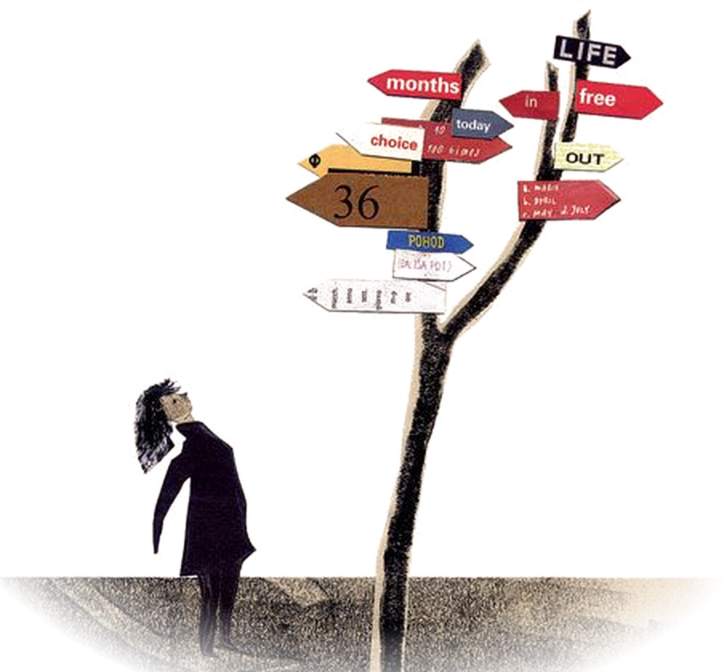

ваш запрос
Работаю со взрослыми и подростками от 15 лет.
Заглушка · своя фраза о том, что можно прийти без готовой цели, и о том, что цель работы – качество жизни, а не «избавиться любой ценой». После интервью (вопросы 5–6)
шаг за шагом

Можно в нескольких предложениях описать, что вас беспокоит, и задать вопросы, которые важны вам перед началом работы. Если сложно сформулировать, хватит и пары слов, даже «не понимаю, что со мной, но что-то не так». Если запрос не в моих компетенциях, я скажу об этом сразу и подскажу, к какому специалисту обратиться. Затем договариваемся о времени и формате первой встречи.
Если вам менее 18 лет, до начала работы нужно, чтобы родители подписали согласие на нее.
Говорим о том, что вас беспокоит: как давно, в каких ситуациях, как это сказывается на вашей жизни. Можно говорить в своем темпе и не отвечать на то, о чем пока не хочется. Вместе формулируем, к чему вы хотели бы прийти, и обсуждаем, что работа может дать, а что нет. После встречи вы спокойно решаете, продолжать ли. Первая встреча ни к чему не обязывает.
Договариваемся о том, какой вклад в работу будет внесен с вашей и с моей стороны, какие условия нам необходимо соблюсти для успешной работы.
Встречаемся регулярно и движемся к цели, которую сформулировали вместе. Цель может меняться, и это нормально. Время от времени сверяемся, что происходит и подходит ли вам работа.
стоимость и формат
в Яндекс Телемосте
2700 ₽
Санкт-Петербург, Думская ул., 5/22, м. Невский проспект и Гостиный двор
3200 ₽
вне зависимости от формата
2000 ₽
вне зависимости от формата
1500 ₽
Будни, 11:00–20:00 по Москве
Сессия длится 55 минут
Онлайн-встречи проходят с включенными камерой и микрофоном у обоих, клиенту необходимо организовать себе уединенное пространство на время встречи.
давайте знакомиться
Записаться и задать вопросы можно в личных сообщениях. Также буду рада ответить на оставшиеся вопросы.
можно начать с такого сообщения
Заглушка · пример первого сообщения – напишем на этапе деталей